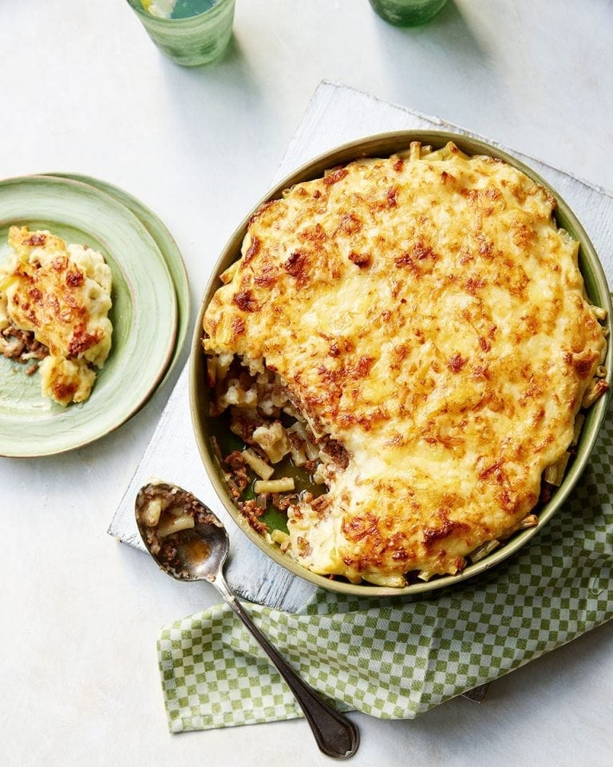

Home
Turkish Mac & Cheese

Photo from Delicious Magazine
Description
This is one of my favourite comfort dishes, a recipe by Hulya Erdal published in Delicious Magazine.
I follow this one as the recipe states, it's easy and perfect as it is. It's a lovely bit of Turkish-Cypriot
cuisine, also called a Firin Makarnasi. Full credit to Hulya here, I've only made very small tweaks. Enjoy!
Ingredients
- 200g grated halloumi
- 200g grated cheddar
- 1 tsp dried mint
- 500g macaroni
- Olive oil (for drizzling and frying)
- 1 finely chopped onion
- 500g lamb mince
- 1 tsp ground cinnamon
- Handful of chopped, fresh flatleaf parsley
- 1 tbsp sweet red pepper paste or tomato paste
- 60g butter
- 75g plain flour
- 600ml milk
- 1 large, beaten free-range egg
- 1/2 tsp ground cinnamon
Steps
- Mix the grated cheeses with the dried mint, then divide in half and put in 2 bowls. Cook the macaroni in boiling salted water for 8-10 minutes until al dente. Drain, rinse quickly with cold water, put back into the pan and toss in a little olive oil.
- Meanwhile heat a good splash of olive oil in a large, deep frying pan and fry the onion on a low-medium heat for around 8 minutes until softened and only just colouring.
- Add the mince, turn up the heat to medium-high and stir regularly to brown the meat. When nearly all the meat is browned, stir in the cinnamon, chopped parsley and pepper/tomato paste. Season with salt and pepper and set aside. Heat the oven to 200°C/180°C fan/gas 6.
- To assemble the macaroni cheese, lightly oil a 2 litre ovenproof dish. Put half the pasta in the dish and sprinkle over one third of the cheese mixture from the first bowl. Add all the mince and sprinkle again with half the remaining cheese. Top with the rest of the pasta and, finally, the rest of the cheese from the first bowl.
- For the béchamel sauce, melt the butter in a large pan slowly over a medium heat until starting to froth. Add the flour and start to whisk (the mixture will be a thick paste). Continue to cook until the paste turns golden and starts to smell biscuity. While vigorously whisking, slowly pour in the milk, keeping the mixture moving all the time to prevent lumps. Carry on whisking until the mixture thickens enough to coat the back of a wooden spoon. Take off the heat and whisk in the beaten egg. Return to the heat for a few seconds until it just starts to bubble.
- Add most of the second bowl of grated cheeses and the ½ tsp cinnamon to the sauce and stir until smooth. Pour the sauce over the top of the pasta and mince, making sure it spreads to the very edges by smoothing it over with a spatula. Top with the remaining cheese.
- Transfer the dish to the oven and bake for around 40 minutes until the top is golden brown and the sauce appears to have set. Remove from the oven and leave to rest for 15 minutes before serving.